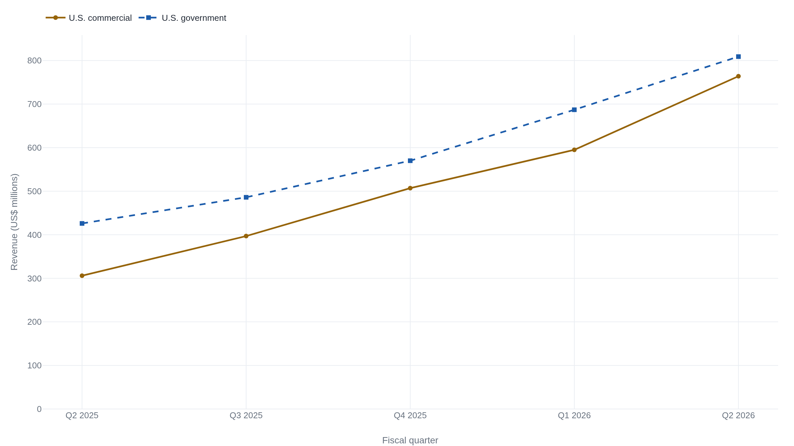

Palantir's price bets on four more years of 40 percent revenue growth
Even after a 93 percent quarter, the price still needs revenue to roughly triple before the multiple looks ordinary, and the stock was 40 percent off its high when it beat.
The quarter the price has to justify
On August 3, 2026, Palantir Technologies reported second-quarter revenue of $1.935 billion, up 93 percent from the same quarter a year earlier, and raised its full-year guidance to a midpoint of $8.15 billion.1 The number the market fixed on sat one level down: U.S. commercial revenue of $764 million, up 149 percent year over year, alongside U.S. government revenue of $809 million, up 90 percent.1 The 10-Q filed the next day carries the same top line to the dollar, $1,935,464 thousand, against $1,003,697 thousand in the second quarter of 2025.2
The growth is real and it is accelerating. So is the price. Back the roughly $9.4 billion of net cash out of the market value, and the enterprise trades near 45 times the revenue the company itself guides to for the whole of this year (the arithmetic is below).2 A software business almost never sustains growth like this, and a valuation like this almost never survives the quarter that growth slows. That collision is the only question worth asking about Palantir today: when a business is genuinely compounding, what has to stay true for a price this large to be right, and what in the record would break it.
The usual shorthand for a stock at 45 times sales is that it is priced for perfection and one stumble away from a fall. Palantir complicates that. It went into this print already about 40 percent below its 52-week high, after a string of beats that the market had stopped rewarding.3 It closed the day of the release at $125.65, then jumped close to 15 percent in the hours after,4 and by the August 6 close had settled at $155.92.5 The market had already taken a good deal of the perfection out of the price before the quarter arrived. That does not make the valuation cheap. It means the reader has to reason about it more carefully than the shorthand allows.
The acceleration is American
Palantir sells software that puts an organization's own data, and now large language models, to work inside its operations. Gotham, the original product, does this for defense and intelligence agencies. Foundry does it for companies, tying scattered systems into one model of the business. The Artificial Intelligence Platform, or AIP, is the newer layer that lets a customer wire those models and its live data into automated workflows. The company reports along two cuts. By customer type it splits government from commercial. By geography it splits the United States from the rest of the world. The valuation leans on one cell of that grid, and it is worth seeing why.
U.S. commercial revenue has gone from $306 million in the second quarter of 2025 to $764 million in the second quarter of 2026, a run that took its year-over-year growth rate from 93 percent to 149 percent while it climbed.16789 Growth rates normally fall as the base they compound against gets larger. This one rose. That is the signature of a product finding new demand faster than its own success can slow it, and it is the reason the market treats AIP as an enterprise software story rather than an extension of a government contractor.

The other cells are quieter. U.S. government revenue grew 90 percent, a strong number, but along a steadier path than commercial. Outside the United States the story changes entirely. Rest-of-world revenue rose from $271 million to $362 million, about 34 percent, and its share of the total fell from 27 percent to 19 percent even as the company as a whole nearly doubled.2 There is no broad global acceleration here. There is a U.S. acceleration, led by commercial, that is diluting a slow international book. Total U.S. revenue reached $1.573 billion, up 115 percent and 81 percent of the company.2 Whatever the price is paying for, it is paying for the durability of an American demand wave.
Two forward measures say that wave has not crested yet. The company closed $3.373 billion of total contract value in the quarter, up 49 percent, and within that its U.S. commercial contract value was $2.132 billion, up 153 percent.1 U.S. commercial remaining deal value, the total contract value it has signed but not yet recognized, stood at $6.238 billion, up 124 percent.1 That backlog is growing faster than revenue, which is what has to happen for the revenue line to keep accelerating. Remaining deal value is the company's own non-GAAP figure and includes optional and cancelable amounts; the stricter GAAP backlog, remaining performance obligations, was $4.9 billion, of which roughly 43 percent is scheduled to be recognized within a year.2 The two are not the same measure, and only the smaller one is an accounting obligation. Customer count reached 1,049, up about 24 percent from 849, and no single customer was more than 10 percent of revenue.2
What 45 times sales requires
A multiple is not a verdict; it is a forecast wearing a single number. To read it, convert it back into the forecast. Palantir had about 2.403 billion shares outstanding at quarter-end.2 At the August 6 close of $155.92, that is a market value near $375 billion.5 The balance sheet holds $9.41 billion in cash and marketable securities and no funded debt, so subtracting the net cash leaves an enterprise value near $365 billion.2 Against this year's guided revenue of $8.154 billion, that is about 45 times forward sales.1 At the lower price the stock traded at right after the release, near $144, the same computation gives roughly 41 times.3 On the analyst earnings estimates the company itself does not publish, the forward price-to-earnings ratio runs about 85 times, against a software-industry median near 19.10 Take the sales multiple as the anchor; it rests on figures the company reports rather than on estimates it declines to give.
Now run it forward. Suppose that some years out the market values Palantir like a mature, high-quality software company. Even a generous terminal figure of 10 times sales is well above where all but a handful of software names trade. Hold today's $365 billion enterprise value flat, meaning the stock returns nothing over the window, and ask what revenue the company must reach for that 10-times multiple to arrive on its own. The answer is $36.5 billion, about four and a half times this year's guided revenue. The table runs the same sum at three terminal multiples.
| Terminal EV / sales | Revenue it implies | vs. FY2026 $8.15B | Years at 40% |
|---|---|---|---|
| 10× | $36.5B | 4.5× | ~4.5 |
| 15× | $24.3B | 3.0× | ~3.2 |
| 20× | $18.3B | 2.2× | ~2.4 |
Read the middle row as the central case. For the enterprise value to settle at 15 times sales, a multiple only the richest software companies still command, revenue has to roughly triple, and at a sustained 40 percent rate that takes a little over three years. Slow the pace to 30 percent, closer to what a company this size usually manages, and the same tripling takes past four years; the 10-times row stretches toward six. And every figure in the table assumes the stock does nothing in the meantime. To actually earn a return, the business has to beat these paths, not merely meet them.
The multiple is a claim that Palantir's revenue roughly triples while the stock sits still, and that even then it trades richer than almost any software company does today.
This is what the market is underwriting, stated as something a reader can check each quarter rather than as a mood. The guidance has been moving the right way: the full-year revenue midpoint walked from $7.19 billion set in February to $7.66 billion in May to $8.15 billion now, and the U.S. commercial guide climbed from at least 115 percent growth to at least 134 percent over the same span.167 The company is raising the very numbers the multiple needs. The question the table poses is whether it can keep raising them for the several years the price has already spent.
The quality the price assumes
A high multiple is a claim that the business has specific qualities, not a general enthusiasm, and each quality can be checked against a figure. Start with margin. GAAP income from operations was $912 million, a 47 percent operating margin, up from 27 percent a year earlier.2 The company's adjusted operating margin was 62 percent, or $1,194 million.1 The 15-point gap between the two is almost entirely stock-based compensation and the payroll tax on it: $912 million plus $265 million of stock compensation plus $17 million of related payroll tax is the $1,194 million adjusted figure.1 Stock compensation is a real cost, and the honest way to see it is as a share of revenue: 13.7 percent this quarter, down from 15.9 percent a year ago.2 It is large, and it is falling relative to the business. It is also not showing up as dilution the way a high stock-comp number often does. Diluted share count rose only about 0.2 percent year over year.2
The net-income line needs more care, because it flatters the company in two ways the operating line does not. GAAP net income was $1,066 million, a net margin near 55 percent, higher than the 47 percent operating margin above it.2 A company's net margin almost never exceeds its operating margin, and the reason this one does is instructive. Palantir earned $77 million of interest income on its cash and $92 million of other income, and then paid tax of just $15 million on $1,081 million of pretax income, an effective rate of 1.4 percent.2 At a normal 21 percent rate the tax would be about $227 million and net income about $854 million, some $200 million lower than reported. The 55 percent net margin is not a durable feature of the business; it is a quarter with almost no tax in it.
The adjusted figures run the other way, and this is the distinction to hold onto. Adjusted operating income is higher than GAAP because it adds stock compensation back. But adjusted net income to common, $1,047 million, is actually lower than GAAP net income to common, $1,061 million, because the company's own reconciliation replaces that near-zero tax with a normalized charge of about $297 million.1 Both GAAP and adjusted diluted earnings rounded to $0.41.2 The table keeps the two frames side by side.
| Measure | GAAP | Adjusted |
|---|---|---|
| Operating income | $912.0M | $1,194.5M |
| Operating margin | 47% | 62% |
| Net income to common | $1,061.9M | $1,047.0M |
| Diluted EPS | $0.41 | $0.41 |
What survives all of this is a business that funds itself and then some. Adjusted free cash flow was $1.22 billion, a 63 percent margin, and operating cash flow over the first six months was $2.1 billion against just $22 million of capital spending.12 Almost no capital goes in and most of the revenue comes out as cash. The company's Rule of 40 score, revenue growth plus adjusted operating margin, was 155, since 93 plus 62 is 155.1 On the two qualities a rich software multiple most demands, cash generation and the durability signal in a backlog that outgrows revenue, the business delivers. The multiple is not demanding those qualities on faith. It is demanding them for years longer than any single quarter can prove.
Where the two reads part
Two honest reads fit this record, and they disagree about how much of the future the table's arithmetic can safely assume.
The durable-compounder read starts from the qualities just counted. Palantir grew 93 percent at a 62 percent adjusted operating margin and threw off cash at a 63 percent margin. With $9.4 billion of net cash and no debt, it can fund its own growth, and a 62 percent margin is the mark of real pricing power. Its signed-but-unrecognized U.S. commercial book grew 124 percent and its new U.S. commercial contracts grew 153 percent, both faster than the revenue they will become, so the near-term path in the table is not a hope but a schedule the backlog already supports.1 On this read the market has spent years underrating exactly this kind of compounding, and the 40 percent drawdown into the print was the latest instance of that.
The one-stumble read starts from the same table and reaches the opposite worry. Tripling revenue at 30 to 40 percent for three to five years, with the stock flat the whole way just to reach a still-premium multiple, is a demand almost no company in history has met from a base this large. And the compounding rests on a narrow footing: it is a U.S. story, led by one product wave, while the international book grows at 34 percent and shrinks as a share of the whole.2 The reported earnings that make the multiple look survivable are flattered by a 1.4 percent tax rate that will not last, and the company's own adjusted net income already sits below its GAAP figure once a normal tax is put back.21 A single quarter where U.S. commercial growth decelerates toward the rest of the business would not break the company, but it would strand the price well ahead of it.
The pre-print drawdown is what keeps both reads live rather than settling the matter. It cuts against the crude version of the bear case, since the market had already de-rated the stock about 40 percent off its high before this quarter, so a good deal of the perfection the shorthand warns about was priced out over the prior year.3 It cuts equally against the crude bull case, since even after that de-rating and this quarter's pop the enterprise still trades at 45 times a revenue line the table says has to triple. What it does not do is decide between them. The evidence that would decide it has not been reported yet.
The two reads resolve on figures the next few filings will carry, not on adjectives. Watch whether U.S. commercial revenue holds a growth rate near the 40 percent the middle of the table needs, or drifts toward the 34 percent of the international book. Watch whether U.S. commercial remaining deal value keeps growing faster than revenue, the signal that the backlog is still front-running the run rate, or rolls under it.1 Watch whether the effective tax rate climbs toward statutory and compresses GAAP net income while the 62 percent adjusted operating margin holds or slips.2 Each is a number a reader can check against this quarter, and together they mark the line between a business growing into its price and a price waiting on a business.
The price is buying one thing: revenue that roughly triples over several years while the stock waits, resting on a demand wave that is real, accelerating, and, for the moment, almost entirely American. Which way the reader leans is the reader's to decide.
Sources
- U.S. Securities and Exchange Commission · Palantir Technologies, Q2 2026 earnings release (Form 8-K, Exhibit 99.1), August 3, 2026
- U.S. Securities and Exchange Commission · Palantir Technologies, Form 10-Q for the quarter ended June 30, 2026
- TradingKey · Palantir Q2 2026 earnings preview (stock ~40% below 52-week high going into the print)
- INDmoney · Palantir Q2 earnings analysis (pre-earnings close $125.65 and after-hours move to ~$144.45)
- StockAnalysis · PLTR price history (close of $155.92 on August 6, 2026)
- U.S. Securities and Exchange Commission · Palantir Technologies, Q1 2026 earnings release (Form 8-K, Exhibit 99.1)
- U.S. Securities and Exchange Commission · Palantir Technologies, Q4 and full-year 2025 earnings release (Form 8-K, Exhibit 99.1)
- U.S. Securities and Exchange Commission · Palantir Technologies, Q3 2025 earnings release (Form 8-K, Exhibit 99.1)
- U.S. Securities and Exchange Commission · Palantir Technologies, Q2 2025 earnings release (Form 8-K, Exhibit 99.1)
- GuruFocus · Palantir forward P/E (~85x on August 3, 2026) versus software-industry median (~19x); analyst-estimate derived